Fight sequence: storyboard and animation (work in progress)
Our own 3D animation made in Blender: a 40-second fight between two original characters, Matter and Energy, at an early draft stage.
Current animation
40 seconds. At this stage the lighting and textures are rough placeholders. The part to judge is the direction: the story of the fight, the camera angles and the timing.
Storyboard for the current animation
37 panels in order, one per shot, each with its length in seconds. The very short graphic flashes that punctuate the big hits are shown as impact flashes.
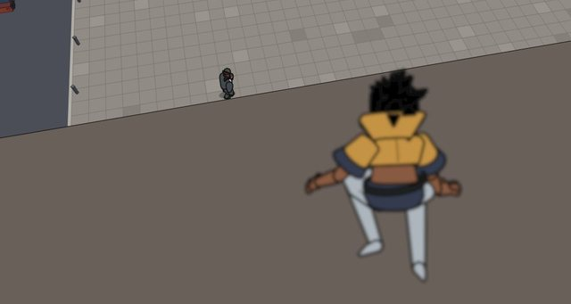
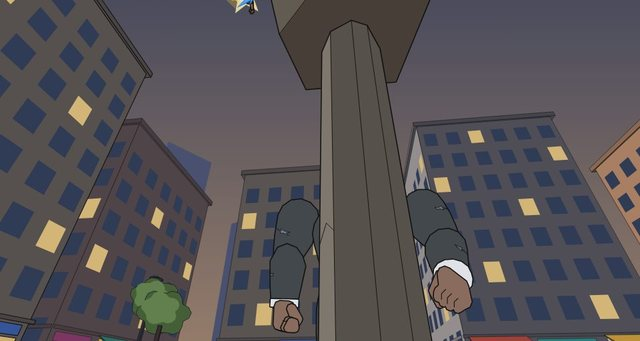
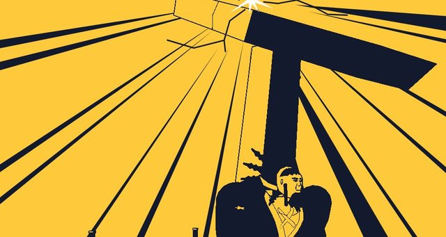
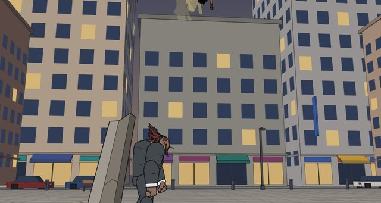
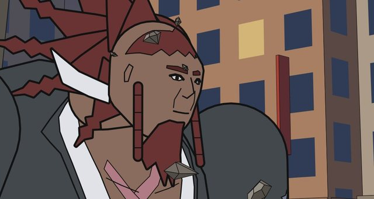
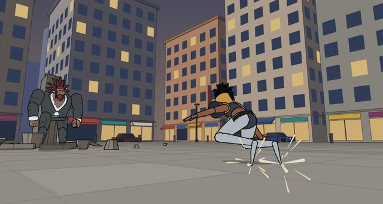
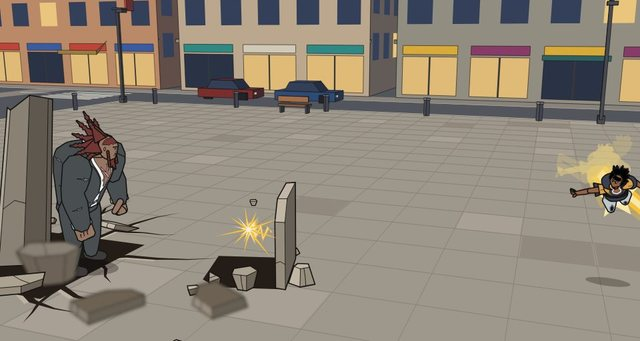
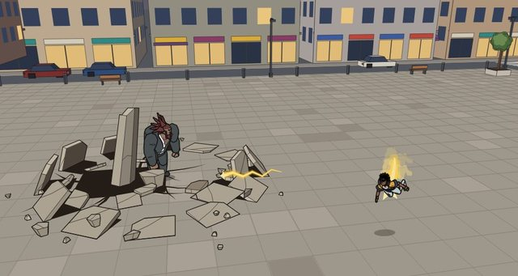
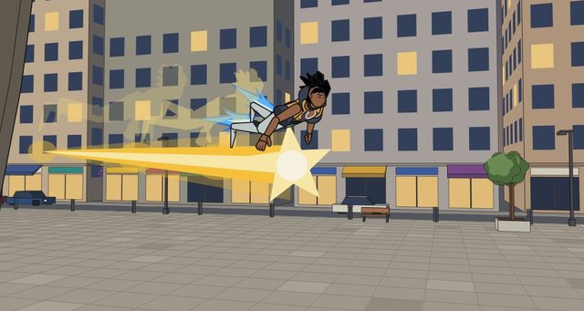
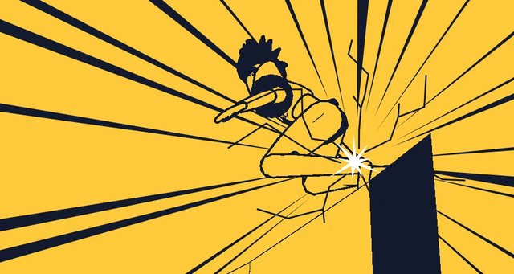
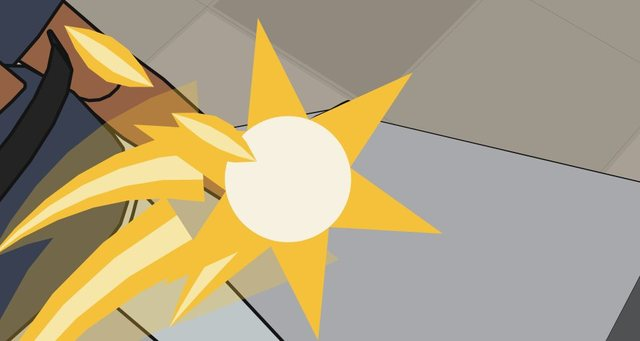
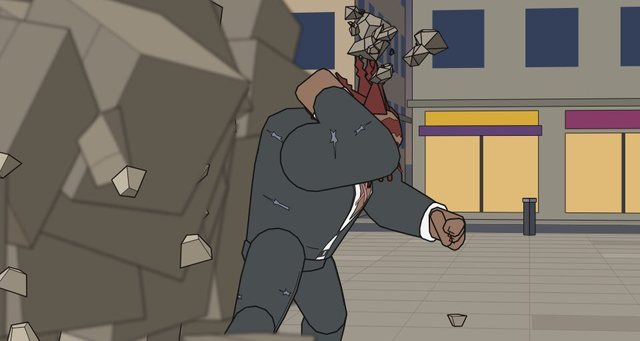
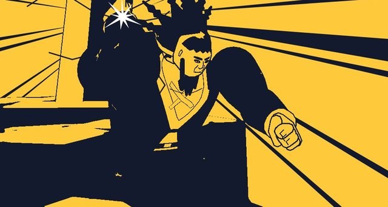
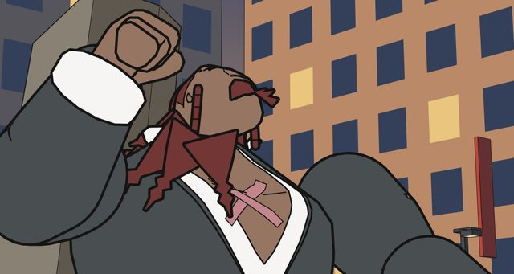
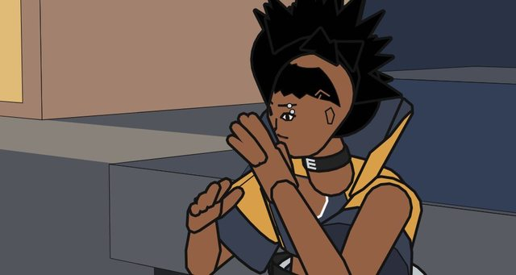
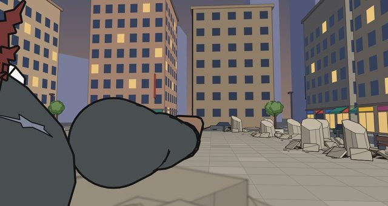
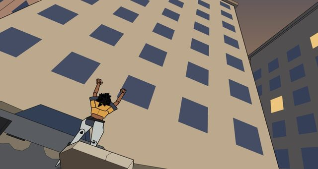
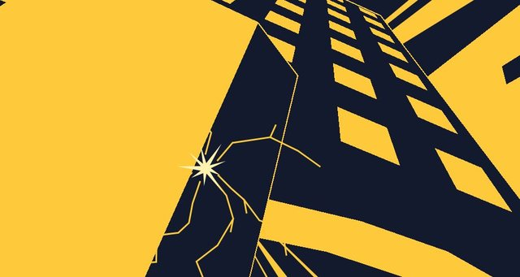
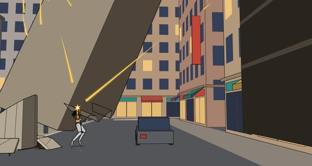
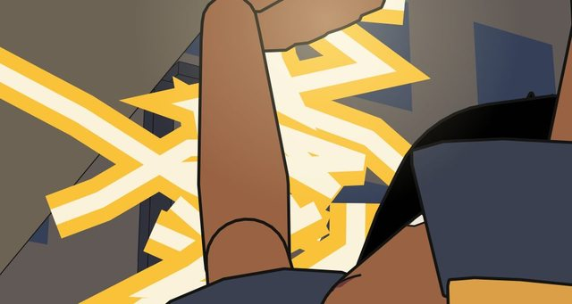
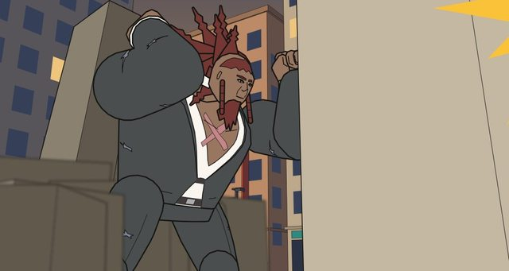
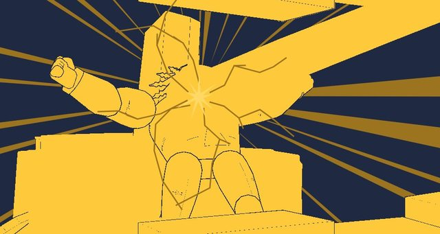
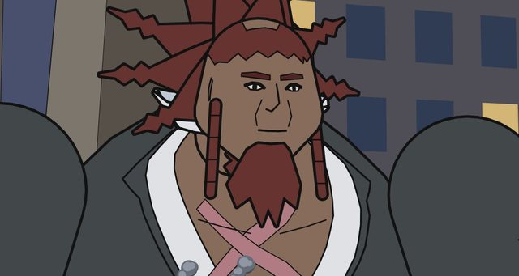
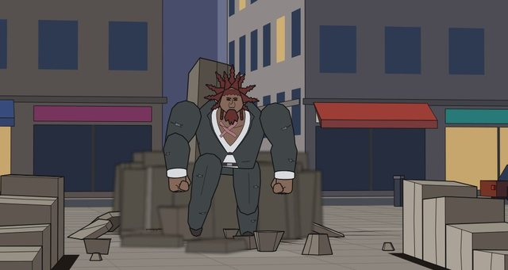
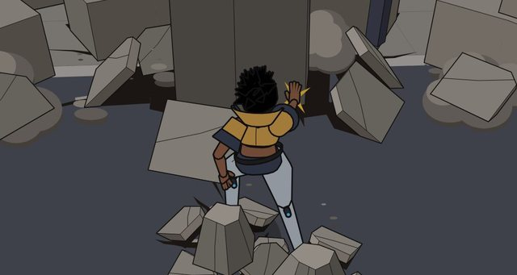
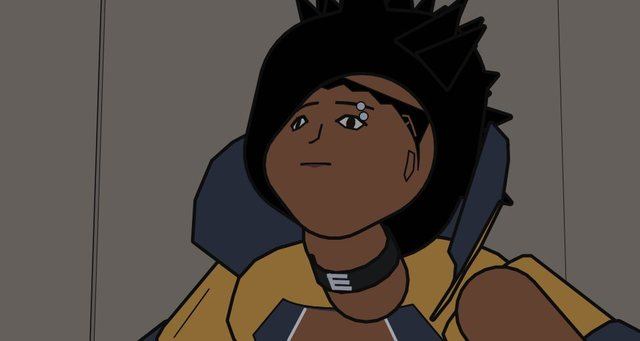
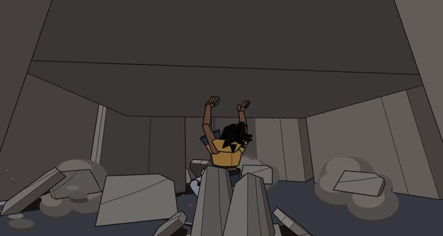
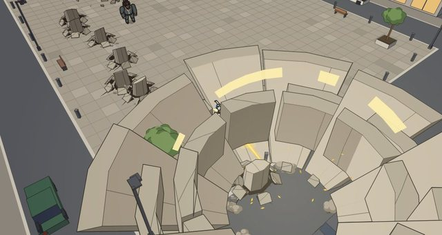
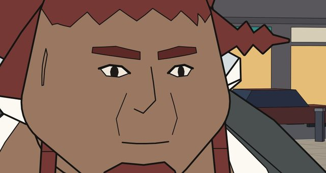
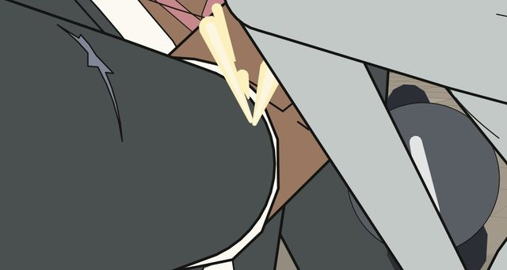
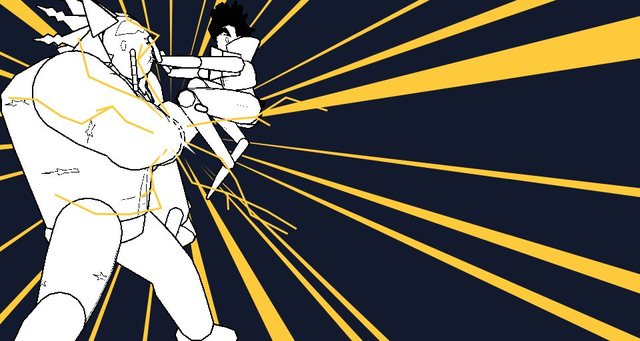
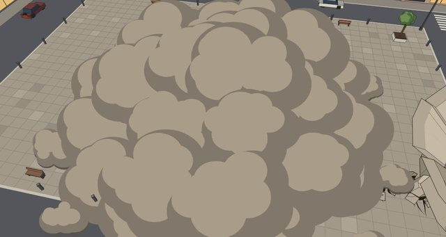
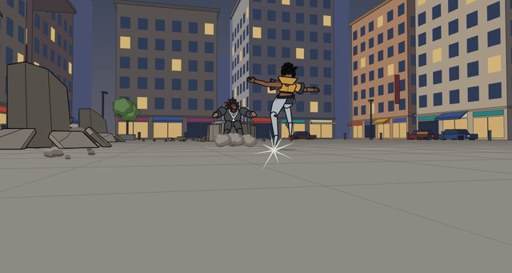
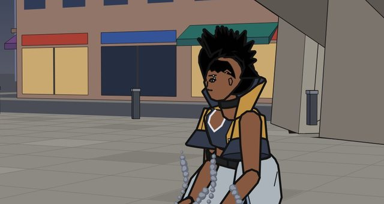
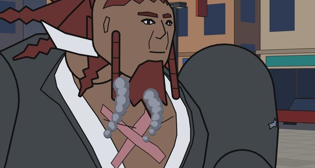
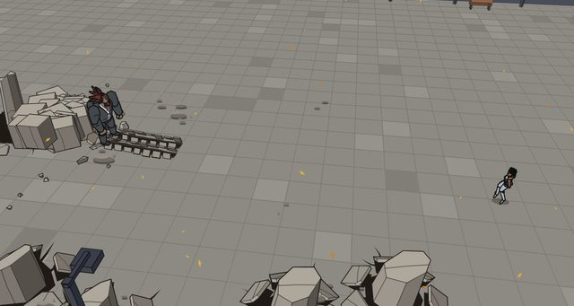
Earlier version
The first pass at the same fight, for comparison. The current version reworks the story, the shot choices and the cameras.
Earlier and current, one above the other
Contact sheets
One frame per second of each version, labelled with the time in the clip. Current version:
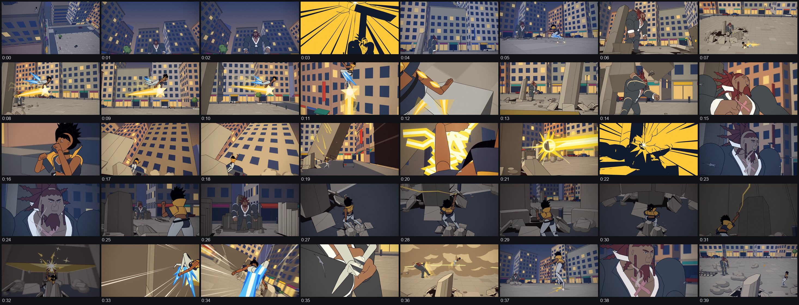
Earlier version:
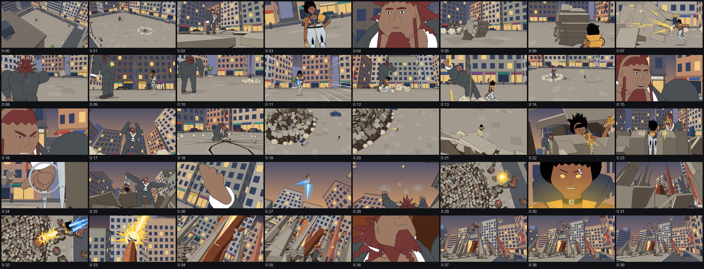